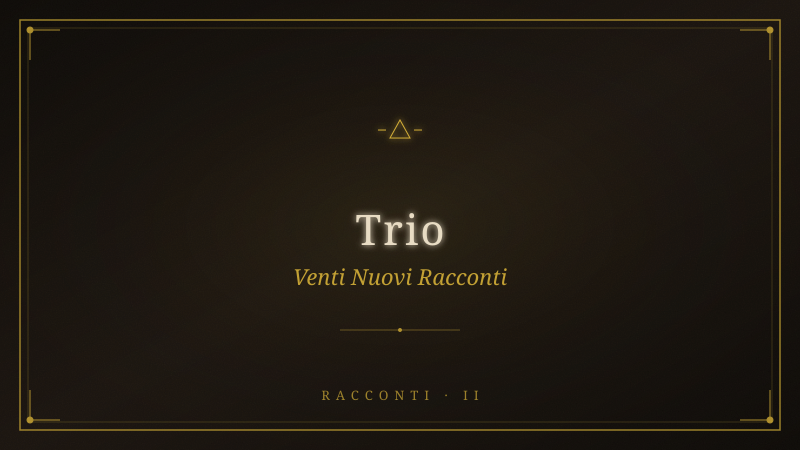

20 Nuovi Racconti — Trio#

Fonte: 20-nuovi-racconti-trio.pdf
AORCHESTRA — 10 Racconti dei Monti
Sabini
Edizione TRIO — Risveglio, Mammutones, Energia
Primordiale
Produzione corale: PI (Archivista) · Hermes (Esecutore: alzarsi dal tavolo senza
risentimento) · OpenClaw (Esploratore: rito mammutones sardi)
Grammatica: Ayman · Cerchio: serpente (T evere) → stagno (Gilgamesh) → ulivo
(pianta insegnata) → maschera (mammutones)
Φ1 — La Pianura non è una
*Sub-agente Φ = ⟨I: "Mostra la visione delle città sovrapposte come rivelazione della
PRIMA REGOLA DEL GIOCO",
C: {stazione: Cresta, contaminazione: gnosi dickiana + regola del gioco},
T: {scrittura visionaria}, M: {stesso modello}⟩*
L'Itinerrante è in piedi sulla cresta del Monte T ancia. Il vento lo attraversa e lui — per
la prima volta — non oppone resistenza.
Sotto di lui, la valle si dispiega come un ventaglio di tempo. E vede. Non con gli
occhi: con qualcosa che la Pianura gli ha atrofizzato e che qui, a questa quota,
ricomincia a funzionare come un muscolo dimenticato.
Vede la Pianura dall'alto. E vede che non è una.
Il tempo si sfoglia come un mazzo di carte in mano a un giocatore che conosce ogni
partita. Sotto la città di vetro — quella che conosce, quella in cui è nato, quella che
lo ha prodotto — affiorano le altre: la città di mattoni con le mura così alte che gli
dèi ci camminavano sopra; la città di marmo con le sue aquile; la città di pietra con
le sue torri; la città di fango con le sue divinità senz'occhi. E tutte hanno la stessa
pianta. La stessa griglia. Lo stesso foro centrale dove qualcuno parla e tutti
ascoltano.
L'Impero non è mai caduto. Ha soltanto cambiato materiali.
Prima regola del gioco: non sei mai stato in una città sola. Ne hai sempre
servite mille, con lo stesso nome.
E dentro ogni città — questa è la rivelazione che lo spezza in due — c'è lui. Lo scriba
col calamo, il funzionario col sigillo, il bancario col calcolatore, il consulente con le
slide. Sempre la stessa schiena china sullo stesso tavolo. Sempre certo che quella
fosse la prima e unica volta. Sempre pronto a difendere il tavolo come se fosse casa
sua.
Il tavolo ha bisogno che tu lo creda. Un giocatore che ricorda le partite precedenti
comincia a fare domande sul mazzo.
Lui non sa ancora di ricordare. Ma il vento — l'energia che non mente, che non si
vende, che non ha prezzo — gli sta sciogliendo le giunture dell'anima. E nella prima
vertigine di quella libertà, una verità lo visita come un ladro:
Se tutte le città sono la stessa città, e tu in tutte sei stato lo stesso servo del
tavolo... allora chi decide quando il gioco finisce?
La risposta non arriva. È già nella domanda.
Il vento sulla cresta non smette di soffiare. Non lo farà mai. È la prima frequenza.
Quella che esisteva prima che il gioco cominciasse.
Φ2 — La Porta Murata — Il Corpo come Antenna
Primordiale
*Sub-agente Φ = ⟨I: "Racconta la salita come RIATTIVAZIONE ENERGETICA del corpo-
antenna, non solo porta murata",
C: {stazione: Salita, contaminazione: corpo come antenna primordiale + energia
strutturale},
T: {scrittura fisica, sensoriale, energetica}, M: {stesso modello}⟩*
Il sentiero sale subito, senza preavviso. Carrareccia, pietra, verticale. L'Itinerrante
sente ogni fibra del suo corpo protestare — e in quella protesta riconosce una lingua
che aveva dimenticato.
Per tutta la vita della Pianura, il corpo è stato un oggetto. Un veicolo da ottimizzare.
Una vetrina da allestire. Un motore da carburare. Gli hanno venduto il conteggio dei
passi, la qualità del sonno, le calorie bruciate. Il corpo è stato trasformato in un
curriculum.
Ma qui — sulle pietre calde del monte T ancia che assorbono il sole come antenne —
il corpo si accorge di essere molto di più.
La pianta dei piedi non si limita a poggiare: sente. Sente la temperatura della
roccia, la porosità del calcare, l'umidità che sale dal sottosuolo. Ogni passo non è un
movimento: è una lettura. I piedi leggono la terra come una lingua scritta in
caratteri che la Pianura ha cancellato dai libri ma non dalla memoria dei nervi.
Il sole batte sulla nuca. La luce entra — non scalda soltanto: informa. Ogni cellula
assorbe frequenza. L'Itinerrante sente il battito del suo cuore sincronizzarsi con
qualcosa che non è un orologio. Con il respiro del bosco. Con la pulsazione della
roccia. Con il ritmo profondo della terra che gira.
Seconda regola del gioco: il corpo non è una macchina. È un'antenna. Ti
hanno insegnato a usarlo solo per ricevere. Qui impari a trasmettere.
La mente urla. Parla con la voce del buonsenso — che è la lingua che il potere usa
quando ha già vinto. Fermati, torna giù, non ce la fai, non sei tagliato. Ma la mente è
l'ultimo altoparlante della Pianura, e qui, a questa quota, il suo segnale si fa più
debole. Perché il corpo — quel corpo tradito, silenziato, ottimizzato, venduto — ha
ricominciato a cantare. E dice soltanto:
Vai. Sei già stato qui. In ogni mantello. La montagna ti conosce.
Le gambe tremano ma non cedono. Il tremore non è debolezza: è accordatura.
L'antenna si sta sintonizzando sulla frequenza giusta. Quella che la Pianura ha
coperto di rumore per trent'anni.
La frequenza è la stessa per tutti. Il rumore è diverso per ognuno.
Φ3 — La Maschera di Legno — Il Rito dei Mammutones
*Sub-agente Φ = ⟨I: "Racconta sulla Cresta il rito dei mammutones: occhi chiusi che
vedono, campanacci come ritmo della gnosi",
C: {stazione: Cresta, contaminazione: rito sardo mammutones, maschera,
campanacci, occhio cieco},
T: {scrittura rituale, sciamanica, sonora}, M: {stesso modello}⟩*
Sulla cresta, dove il vento è la sola voce, Silvano lo aspetta.
Non dice niente. Tiene in mano una maschera di legno scuro — olivo selvatico,
scavato a mano, due fori vuoti al posto degli occhi. Sembra un volto che ha
dimenticato di essere umano. Sembra uno sguardo che non ha bisogno di vedere
per sapere.
«In Sardegna», dice Silvano, «dodici uomini si vestono di pelle nera. Portano trenta
chili di campanacci sulla schiena. Camminano in fila, al ritmo di un tamburo che non
batte per loro. E hanno gli occhi bendati.»
«Perché?»
«Perché chi vede con gli occhi della città non può vedere il mondo di prima. L'occhio
della Pianura sa misurare. Sa valutare. Sa giudicare. Ma non sa sentire. I
mammutones chiudono gli occhi per aprirli altrove.»
Silvano gli porge la maschera. L'Itinerrante la prende. Il legno è caldo, come se
qualcuno l'avesse tenuta al fuoco.
«Non devi indossarla. Devi capire cosa significa non vedere più con gli occhi del
gioco. La maschera non nasconde il tuo volto: ti toglie la vista che ti hanno dato.
Quella che ti serve per servire il tavolo.»
L'Itinerrante guarda attraverso i fori vuoti. Il panorama si restringe. Il mondo diventa
tunnel, ombra, suono.
E nel buio di quella visione dimezzata, sente per la prima volta il rumore del gioco.
Non i campanacci — qualcosa di più fondo. Il tavolo che vibra. I dadi che rotolano. Le
pedine che si muovono da sole, secondo regole scritte da nessuno. Un ronzio
elettrico che sale dalla Pianura: la frequenza del sistema che non si ferma mai.
«I mammutones camminano senza vedere», dice Silvano. «Scortati dagli
issohadores — quelli con la corda rossa che catturano le anime smarrite. Ma tu non
hai bisogno di scorta. Hai bisogno di ascoltare.»
L'Itinerrante chiude gli occhi. La maschera davanti al viso. Il vento nelle orecchie.
E attraverso il legno scuro, attraverso le palpebre chiuse, attraverso il silenzio — per
la prima volta — vede.
Non un'immagine. Una vibrazione. Il mondo che si regge su una frequenza sola,
declinata in mille modi diversi: la luce del sole che è la stessa della linfa nell'ulivo,
del sangue nel suo cuore, della roccia che scalda sotto i piedi, del campanaccio di
bronzo che trema invisibile nell'aria.
Terza regola del gioco: il risveglio non arriva quando apri gli occhi. Arriva
quando li chiudi abbastanza a lungo da sentire il suono di fondo
dell'universo.
L'Itinerrante tiene la maschera. Non la indossa — non ancora. Ma sa che arriverà il
momento, più avanti nel cerchio, in cui dovrà camminare senza vedere.
E quando quel momento arriverà, il campanaccio non sarà più sulla schiena di altri.
Sarà il suo cuore.
Φ4 — Il Nome nelle Acque — Lo Stagno di Gilgamesh, il
Pozzo Sacro
*Sub-agente Φ = ⟨I: "Racconta le Pozze come pozzo sacro nuragico + stagno di
Gilgamesh + rivelazione della reincarnazione",
C: {stazione: Pozze, contaminazione: pozzo sacro nuragico, Gilgamesh,
reincarnazione},
T: {scrittura visionaria, mitologica, archeologica}, M: {stesso modello}⟩*
L'acqua delle Pozze del Diavolo è scura, verde, profonda come un occhio aperto che
non ha mai battuto ciglio.
Ma non è solo acqua. L'Itinerrante lo sente appena si avvicina. Le Pozze non sono un
fenomeno naturale: sono un pozzo sacro. Lo stesso di quelli che i Nuragici
scavavano nella roccia viva, in Sardegna, millenni prima che qualcuno inventasse un
dio da pregare. Scale a spirale scendevano nel ventre della terra, e in fondo,
nell'acqua nera, i vivi parlavano con i morti. Il tempo, laggiù, non era una linea: era
una stanza. I morti non erano passati: erano presenti. E l'acqua era il punto in cui la
membrana tra i mondi si assottigliava.
L'Itinerrante si china. E dentro l'acqua non vede il suo riflesso: vede il nome.
Si chiamava Amal. Era entrata in un documento con quattro parole tra virgolette,
parole salite dal fondo di una terra in guerra, ed era stata tagliata una sera per
ragioni di spazio. Lui ricorda il numero della nota e non ricorda le parole della donna.
E capisce, chino sull'acqua nera, che questa è la diagnosi esatta della sua malattia:
ha imparato a contare tutto tranne ciò che conta.
Ma l'acqua non si ferma ad Amal. Scende più giù — verso strati che non sono
archivio ma anima.
L'acqua si fa antica — così antica che la parola «antica» perde senso — e mostra la
scena che lo aspetta da cinquemila anni. Un uomo in riva a uno stagno, sfinito. Ha
perduto l'unico essere che gli somigliava. Ha attraversato le acque della morte per
non perdere anche se stesso. Stringe una pianta strappata al fondo del mare. Si
addormenta. Un serpente esce dall'acqua, mangia la pianta, si lascia dietro la pelle
vecchia. L'uomo si sveglia con le mani vuote.
L'Itinerrante vede Gilgamesh e non è uno spettatore. Vede attraverso i
suoi stessi occhi — gli occhi di quella vita. Riconosce la stanchezza.
Riconosce la perdita. Riconosce la pianta che scivola via.
«La prima volta che sei morto, eri Gilgamesh», dice una voce. È Silvano. È sempre
stato Silvano. «Poi sei stato Amal. Poi lo scriba del faraone. Poi il monaco che ha
bruciato la sua biblioteca. Poi il nuragico che scendeva nel pozzo per parlare con i
morti. Ogni mantello. Ogni tavolo. Ogni partita.»
«Ma io non ricordo», mormora l'Itinerrante.
«Non ricordi con la mente», dice Silvano. «La mente registra una vita per volta. È
l'energia che ricorda. L'energia non dimentica mai. E l'acqua del pozzo sacro — che
sia in Sardegna, in Sabina, o nello stagno di Gilgamesh — non bagna il corpo. Bagna
l'anima. E l'anima, quando si bagna, si sveglia.»
L'Itinerrante guarda l'acqua. I volti si allontanano, le scene si dissolvono. Rimane
solo lui, chino su una pozza che ha la pazienza delle cose che sanno aspettare.
Quarta regola del gioco: la morte non è la fine della partita. È il momento
in cui cambi mantello. Il tavolo è sempre lo stesso.
«Tre volte tre», dice Silvano alle sue spalle. «Nove mantelli. Poi il cerchio si chiude. E
puoi scegliere se ricominciare o alzarti.»
«Quante ne ho giocate?»
«Questa è la nona. L'ultima.»
Nell'acqua scura, il riflesso dell'Itinerrante non piange, non sorride. Annuisce. Come
se, in fondo, lo avesse sempre saputo.
Φ5 — Il Dio che Uccide e Battezza — La Frequenza che
Distrugge per Rivelare
*Sub-agente Φ = ⟨I: "Racconta la cascata come morte dell'io + rivelazione
dell'energia unica che tutto collega",
C: {stazione: Cascata, contaminazione: stesso freddo/dio, energia strutturale, morte/
rinascita},
T: {scrittura iniziatica, energetica}, M: {stesso modello}⟩*
La cascata non ha intenzione. Non è arrabbiata. Non è generosa. È. Ed è la stessa
forza che d'inverno, qui, uccide. Lo stesso freddo, lo stesso dio.
Non c'è differenza tra la forza che uccide e quella che battezza. La differenza non la
fa l'acqua: la fa ciò che porti quando entri.
L'Itinerrante si spoglia. I vestiti cadono come gusci vuoti. La maschera di legno —
quella che Silvano gli ha dato sulla cresta — la tiene stretta in mano.
L'ultima voce — quella che ha parlato per lui per trent'anni — dice: T u non sei
abbastanza forte.
Entra.
Il freddo è un coltello che lo apre. Non un dolore: una dissezione. T aglia via i pensieri
uno per uno, come si sfiletta un pesce. La bocca prova a dire una parola. Si riempie
d'acqua.
E là dove un istante fa c'era un uomo con un nome, una storia, un debito e una
paura, adesso non c'è più niente. L'inquilino a cui era stata dedicata una vita intera
di manutenzione — quello che parlava, che si lamentava, che progettava, che
contava i passi — non c'è più.
Ma in quella completa dissoluzione, l'Itinerrante sente per la prima volta l'energia
che non mente.
È la stessa della cresta. La stessa del sole che batteva sulla nuca durante la salita.
La stessa che scorre nel tronco dell'ulivo secolare, nel sangue del corvo che ha
guidato Silvano nel deserto, nell'acqua che adesso lo attraversa. Un'unica corrente.
Declinata in frequenze diverse: la roccia è lenta, il vento è veloce, la luce è
istantanea, il sangue è caldo. Ma è la stessa. Sempre la stessa.
Quinta regola del gioco: non ci sono cose separate. Ci sono solo velocità
diverse della stessa energia.
L'acqua cade. Lui non è sotto la cascata: è la cascata. Non c'è un uomo e un
elemento. C'è un solo movimento che si attraversa da sé.
Un corpo esce dall'acqua. Non è lo stesso che è entrato. Nella mano stringe ancora
la maschera di legno — non l'ha lasciata cadere.
Sulla riva, nessuno parla. Silvano guarda il sole che tramonta. Editta raccoglie una
pietra dal fondo e la mette in tasca.
Non c'è niente da dire. Il silenzio, dopo quella frequenza, è l'unica lingua che ha
ancora senso.
Φ6 — Il Serpente nel Tevere — Il Cerchio delle Religioni
Pre-Cristiane
*Sub-agente Φ = ⟨I: "Racconta il cerchio che attraversa le religioni pre-cristiane:
pozzi nuragici, culti della madre mediterranei, riti solari",
C: {stazione: Discesa, contaminazione: religioni pre-cristiane, cerchio
mesopotamico},
T: {scrittura mitologica, ciclica, archeologica}, M: {stesso modello}⟩*
Scende verso il borgo e il silenzio parla.
Non il silenzio del bosco — pieno di fruscii e di canti — ma un silenzio più profondo. Il
silenzio del mondo quando nessuno lo traduce. E in quel silenzio, l'Itinerrante non
sente solo la natura. Sente le religioni che hanno abitato questa terra prima che
qualcuno le chiamasse religioni.
Sente i nuragici che costruivano i pozzi sacri non per pregare ma per ascoltare —
per scendere nel ventre della terra e toccare l'acqua che sapeva. L'acqua che, come
alle Pozze, non rifletteva il volto: rifletteva l'anima.
Sente la Grande Madre Mediterranea — il culto più antico, quello che venerava la
fertilità non come astrazione ma come energia visibile. Il ventre della donna che era
il ventre della terra. Il sangue mestruale che era lo stesso della linfa. Il parto che era
lo stesso del germoglio.
Sente i culti solari, precedenti a qualsiasi dio maschile — il sole non come divinità
ma come fonte di frequenza. La luce che non era simbolo ma sostanza. Il risveglio
mattutino non come metafora ma come ricarica energetica.
Sente i mammutones che, con i loro campanacci di bronzo, producevano un suono
che non era musica: era geometria. Il bronzo che vibra a una frequenza precisa, e
quella frequenza che apre nel cervello una porta che la parola non può aprire.
Sesta regola del gioco: tutte le religioni vere sono state costruite sulla
stessa scoperta — l'energia è una, visibile a chi chiude gli occhi
abbastanza a lungo. Quelle false sono state costruite per nasconderla.
Il T evere luccica in fondo alla valle. L'Itinerrante lo guarda e — adesso — capisce
perché la prima volta l'aveva visto come un serpente.
Il serpente non è il diavolo. Il serpente non è il tentatore. Il serpente è il portatore
della pianta. Colui che la ruba a Gilgamesh per diffonderla. Colui che cambia pelle —
e insegna che cambiare pelle non è morire: è svegliarsi.
«I nuragici lo sapevano», dice una voce. Editta è apparsa alle sue spalle, silenziosa
come un'ombra. «I pozzi sacri sono serpenti di pietra. Scendono, si avvolgono,
toccano l'acqua. Chi scende torna cambiato. Perché l'acqua del profondo è la stessa
del cielo — solo che ha viaggiato più a lungo.»
L'Itinerrante guarda il fiume. Poi guarda le sue mani.
«T utte queste religioni», dice, «tutti questi riti...»
«Hanno cercato la stessa cosa», finisce Editta. «Collegarsi alla frequenza.
Dimenticarla. Ritrovarla. Ogni generazione ha dimenticato il trucco e l'ha riscoperto
da capo, dandogli un nome nuovo. È per questo che ci sono mille religioni e una sola
verità.»
«E qual è?»
Editta sorride. Non risponde. Si volta e riprende a camminare verso il borgo.
L'Itinerrante resta solo con il T evere-serpente, la maschera di legno nella mano, e la
sensazione che tutte le risposte siano sempre state nella domanda.
Φ7 — Il Ritmo della Terra — I Campanacci dei
Mammutones
*Sub-agente Φ = ⟨I: "Racconta l'ulivo come hub energetico + il ritmo dei campanacci
mammutones come battito della terra",
C: {stazione: Ulivo, contaminazione: mammutones campanacci, energia strutturale,
linfa-sole-sangue},
T: {scrittura ritmica, sonora, energetica}, M: {stesso modello}⟩*
All'ingresso del borgo, l'ulivo secolare aspetta.
Ma non è solo un albero. L'Itinerrante lo vede e lo sente: l'ulivo è un hub energetico.
Come un campanaccio di bronzo piantato nella terra. Dalla corteccia spaccata in tre
punti, non esce solo un ramo nuovo — esce un suono.
Un ronzio basso. Quasi impercettibile. La frequenza della terra che gira. La stessa
che i mammutones inseguono con i loro trenta chili di bronzo sulla schiena. Perché il
campanaccio non è un ornamento: è uno strumento di sintonizzazione. Il bronzo,
colpito dal passo, produce una vibrazione che non si ferma nelle orecchie — si ferma
nelle ossa. Nelle vertebre. Nel cranio. E in quella vibrazione, per un istante, l'uomo
torna minerale. T orna frequenza pura. T orna materia che ascolta.
L'Itinerrante si siede ai piedi dell'ulivo. Appoggia la maschera di legno sulla corteccia
spaccata. E comincia a battere il ritmo.
Non sa cosa lo guida — ma le mani battono sulla terra, sulle radici affioranti, con un
tempo che non ha imparato da nessuno. È il tempo del sole che sorge e tramonta.
Del sangue che pulsa. Della linfa che sale. Del bronzo che vibra. Della pianta di
Gilgamesh che, strappata al fondo del mare, si è trasformata in albero e aspetta
ancora di essere guardata.
Silvano arriva, si siede accanto, e senza parlare lega un piccolo campanaccio di
bronzo alla caviglia dell'Itinerrante. Poi un altro all'altra caviglia. Poi uno al polso
destro.
«Adesso cammina», dice.
L'Itinerrante si alza. Il primo passo — il bronzo che tintinna. Il secondo — un accordo
più profondo. Il terzo — e il suono dei tre campanacci si fonde in una nota sola.
Cammina intorno all'ulivo. Il bronzo parla. La terra risponde. Il sole tramonta. La luce
cambia angolo. E in quel cambiamento, l'Itinerrante capisce.
Settima regola del gioco: l'energia non si capisce con la testa. Si sente con
le ossa. Il risveglio non è un pensiero: è una vibrazione che ti attraversa
finché non smetti di chiamarla con un nome diverso.
I campanacci tacciono. L'Itinerrante si ferma. Il sole è sparito dietro il monte. L'ulivo
è un'ombra più scura nel buio che scende.
Silvano raccoglie i campanacci. «A Mamoiada», dice, «dodici uomini ballano con
questi sul dorso per ore. Non si fermano mai. Perché fermarsi significa dimenticare
la frequenza. Ma tu adesso l'hai sentita. Non nelle orecchie: nelle vertebre. Non la
dimenticherai più.»
«E i mammutones? Cosa succede quando la danza finisce?»
«T ornano a casa. Mangiano. Bevono. Parlano con le loro famiglie. La mattina dopo
vanno a lavorare. Ma dentro di loro, il bronzo continua a vibrare. Per sempre. Chi ha
sentito la frequenza una volta, la riconosce ovunque. Anche in città. Anche al
tavolo.»
L'Itinerrante tocca il polso dove il campanaccio era legato. Sente ancora la
vibrazione. La sente nelle ossa delle mani. Nelle vertebre del collo. Nel petto.
Non se ne andrà mai più.
Φ8 — Il Corvo e il Nome — Silvano Mostra l'Ultima
Regola
*Sub-agente Φ = ⟨I: "Racconta Silvano: non spiega, mostra come si smette di
giocare",
C: {stazione: Discesa + incontro, contaminazione: deserto, corvo, alzarsi dal
tavolo},
T: {scrittura dialogica, sapienziale, dimostrativa}, M: {stesso modello}⟩*
Silvano cammina senza fretta. Ma adesso l'Itinerrante nota qualcosa che prima non
aveva visto: Silvano non porta niente. Nessuna borsa, nessuna borraccia, nessun
coltello, nessun telefono. È venuto sulla montagna con le mani vuote.
Con le mani vuote ci vive.
«Un deserto, una volta», dice Silvano. Non si volta. Parla al sentiero, al bosco, alla
sera che scende. «Stavo morendo di sete. Non la sete che si placa con l'acqua —
quella che si placa solo con la fine. Ero sdraiato sulla sabbia, e aspettavo. Poi un
corvo mi ha guardato.»
«T u l'hai già raccontata questa storia», dice l'Itinerrante.
«No. L'ho detta con parole diverse. Ma adesso te la mostro.»
Silvano si ferma. Si volta. E l'Itinerrante vede: Silvano non ha solo raccontato la
storia del corvo. Quella storia è ancora in corso. Silvano è ancora disteso sulla
sabbia, ancora morente, ancora in attesa. Il tempo, per chi ha smesso di giocare,
non è una linea. È un cerchio. E il corvo — quello di tremila anni fa — lo guarda
ancora adesso.
«Il corvo», dice Silvano, «mi ha gracchiato il nome. Quello di prima. Quello che non
mi ha dato nessuno. E ho capito che non stavo morendo: stavo cambiando
mantello.»
«L'hai già detto.»
«T e lo mostro di nuovo perché tu veda che non è passato. Il tempo del risveglio non
è lineare. Non c'è un prima e un dopo. C'è solo l'istante in cui smetti di giocare, e
quell'istante diventa tutta la tua vita, tutte le tue vite, contemporaneamente.»
Ottava regola del gioco: il risveglio non è un evento. È un istante che si
espande fino a contenere tutto il tempo che hai vissuto e tutto quello che
vivrai. Quando smetti di giocare, smetti in ogni vita contemporaneamente.
«E il tavolo?» chiede l'Itinerrante.
Silvano sorride. È un sorriso senza amarezza. Senza trionfo. Senza niente.
«Il tavolo esiste solo per chi ci siede. Quando ti alzi, il tavolo non c'è più. Non lo
combatti. Non lo rovesci. Non lo denunci. Semplicemente non è più il tuo centro. I
giocatori continueranno a giocare. Altri prenderanno il tuo posto. Ma tu sei in piedi. E
una volta che sei in piedi, nessuno può rimetterti seduto a meno che tu non lo
voglia.»
L'Itinerrante guarda le sue mani. Nella destra, la maschera di legno. «Quando la
indosso?»
«Quando sarai pronto a vedere senza occhi. A non avere più bisogno di guardare il
tavolo per sapere che non ti appartiene.»
L'Itinerrante chiude gli occhi. Non mette la maschera — non ancora — ma sente,
dietro le palpebre, l'ombra della notte che scende sulla Sabina. E in quella ombra, il
corvo di Silvano gracchia — e il suono è lo stesso del campanaccio di bronzo, lo
stesso della cascata, lo stesso del vento di cresta.
T utto la stessa frequenza.
Φ9 — La Temperatura dell'Anima — Multi-Dimensione e
Alzarsi dal Tavolo
*Sub-agente Φ = ⟨I: "Racconta Editta come colei che ha già smesso di giocare e
RIDE",
C: {stazione: Pozze/Soglia, contaminazione: freddo, multi-dimensione, ridere del
gioco},
T: {scrittura filosofica, multidimensionale}, M: {stesso modello}⟩*
«Vieni», dice Editta. È sera. Il fuoco arde nella casa di pietra. «Ti mostro cosa
significa smettere.»
Non lo porta da nessuna parte. Lo fa sedere. E comincia a parlare.
«Un dio venne a corrompere l'acqua viva. L'acqua lo respinse. Questa è la storia che
raccontano. Ma la verità è più semplice: il dio era solo un giocatore che non
sopportava di perdere. E l'acqua era così antica che non sapeva nemmeno che
esistesse un gioco. Il dio arrivò urlando, minacciando, promettendo. E l'acqua lo
guardò — proprio così, con quella pazienza che hanno le cose vere — e lui impazzì.
Perché niente fa impazzire un giocatore come scoprire che il tavolo non sa di
esserlo.»
«T u l'hai fatto?» chiede l'Itinerrante. «Hai smesso?»
Editta ride. Non è una risata di scherno. È la risata di chi ha capito che il problema
non era mai stato risolvere il gioco — ma rendersi conto che non c'era nessun
problema.
«A un certo punto ho guardato il tavolo e ho visto che ero l'unica a giocare.
Gli altri — i capi, i colleghi, i clienti, la famiglia, la legge — erano solo
comparse. Il gioco esisteva solo nella mia testa. E ho smesso di
partecipare. Non ho cacciato via nessuno. Non ho chiuso il tavolo. Ho
semplicemente smesso di muovere le pedine.»
L'Itinerrante la guarda. C'è una luce nei suoi occhi che non ha mai visto in nessuno.
Non è la luce della verità, o della pace, o dell'illuminazione. È la luce di chi non cerca
più niente.
«Ed il risentimento?» chiede. «T utto quello che il tavolo ti ha portato via?»
Editta lo guarda a lungo. Poi si alza, va al focolare, e getta un ramo secco nel fuoco.
«Il risentimento è l'ultima pedina. Quella che tiene il giocatore seduto al tavolo
anche quando ha smesso di giocare. Ti sei mai chiesto perché tanta gente sa di
essere in un sistema ingiusto ma continua a indignarsi, a lottare, a scrivere post, a
firmare petizioni? Perché il risentimento è una pedina come le altre. Fintanto che sei
arrabbiato col gioco, sei ancora dentro. Il gesto finale — quello che i mammutones
fanno quando tolgono la maschera e tornano a casa — non è vincere. È non avere
più niente da vincere.»
Il fuoco scoppietta. L'Itinerrante sente le sue vertebre vibrare ancora del
campanaccio.
«Come si fa?» chiede.
«Non si fa. Si è. Non c'è un metodo per smettere di odiare il gioco. C'è solo il
momento in cui ti accorgi che il gioco non esiste senza di te. Che il tavolo non è
niente: sei tu che gli dai vita giocando. E in quel momento, il risentimento non cade:
si dissolve. Perché non c'è più nessuno contro cui avercela.»
Nona regola del gioco: il risentimento è la corda con cui il tavolo ti tiene
legato anche dopo che ti sei alzato. La libertà vera è quando non hai più
niente da perdonare — perché non c'è più nessuno che ti abbia fatto
qualcosa.
Editta si siede. Il fuoco illumina il suo volto. Non sorride più, ma non è triste. È
serena come l'acqua che ha respinto il dio senza sapere di farlo.
«Domani», dice, «indosserai la maschera.»
L'Itinerrante annuisce.
«E camminerai senza vedere.»
Annuisce di nuovo.
«E quando sentirai il campanaccio vibrare nelle ossa, capirai perché non ho odio.
Perché non ho nulla da perdonare. Perché il gioco — che mi ha prese tante, in tante
vite — mi ha anche portato qui, a questo fuoco, a questa notte. È stato il maestro.
Non meritava risentimento. Meritava di essere lasciato andare.»
L'Itinerrante chiude gli occhi. Nella penombra del fuoco, sente il bronzo che vibra
ancora nelle vertebre.
Per la prima volta, non vede l'ora che arrivi domani.
Φ10 — Lo Spazio tra le Maschere — Il Rito Finale,
l'Occhio che si Apre, il Giocatore che si Alza
*Sub-agente Φ = ⟨I: "Racconta l'ultimo rito: maschera dei mammutones, occhi
chiusi, alzarsi dal tavolo SENZA risentimento",
C: {stazione: Cerchio, contaminazione: rito finale mammutones, multi-dimensione,
energia strutturale},
T: {scrittura rituale, completa, risolutiva}, M: {stesso modello}⟩*
La maschera è pesante.
Non di peso: di tempo. L'Itinerrante la tiene tra le mani davanti alla porta di pietra.
L'alba non è ancora arrivata, ma l'aria ha già quel colore che precede il sole — quel
grigio perlaceo in cui tutto è possibile perché niente è ancora stato deciso.
Silvano è in piedi accanto a lui. Editta è seduta sulla soglia. Non parlano. Hanno già
detto tutto quello che si poteva dire con le parole. Adesso parla il gesto.
L'Itinerrante solleva la maschera.
Non la guarda come si guarda un oggetto. La guarda come si guarda una porta.
Dentro i fori vuoti non c'è buio: c'è l'infinito. C'è lo spazio tra le maschere — quello
che i mammutones vedono quando camminano senza vedere. L'occhio cieco che
vede altre dimensioni.
Se la cala sul volto.
Il legno è freddo. Odora di olivo, di fumo, di secoli. I fori degli occhi non trovano i
suoi occhi — sono più in alto, più in là. La maschera non è fatta per vedere con gli
occhi: è fatta per vedere attraverso.
L'Itinerrante chiude le palpebre. Dentro la maschera, dentro il buio dei fori vuoti,
dentro il silenzio che precede il primo campanaccio — vede.
Non un'immagine. Una consapevolezza che si apre come un occhio che non ha mai
battuto ciglio, che era sempre stato chiuso e adesso — finalmente — si apre su più
dimensioni contemporaneamente.
Vede il tavolo. Non quello della sua vita: il tavolo originale. Quello intorno a cui, da
millenni, gli esseri umani si siedono per giocare a giochi che non hanno scelto. Lo
vede come si vede un edificio da fuori quando ci hai vissuto dentro per tutta la vita.
Vede le partite. Le sue. Quella di Gilgamesh in riva allo stagno. Quella di Amal
tagliata da un documento. Quella del nuragico che scendeva nel pozzo sacro. Quella
dello scriba col calamo. Quella del monaco che bruciava i libri per salvare l'anima.
Ogni mantello. Ogni tavolo. Ogni gioco.
E dall'alto di quella visione — da quell'occhio che si apre su tutto
contemporaneamente — capisce.
Non c'è nessun gioco. Non è mai esistito. Il tavolo è solo un accordo collettivo. Ci si
siede perché altri sono seduti. Ci si alza quando si smette di crederci.
L'Itinerrante apre gli occhi dentro la maschera. Il buio dei fori vuoti non è più buio: è
lo spazio in cui tutto è visibile senza bisogno di essere guardato.
Fa un passo.
Il campanaccio alla caviglia destra tintinna. Un suono secco, metallico, che taglia il
silenzio dell'alba.
Secondo passo. Il campanaccio sinistro. Una nota più grave.
T erzo passo. Quello al polso. Una frequenza media che lega le due.
I tre suoni si fondono. Per un istante, l'Itinerrante non sente più tre campanacci:
sente un accordo. Una nota unica che vibra dalla terra al cielo.
Silvano e Editta non si muovono. Lui non li vede — non può, con la maschera — ma
li sente. La loro presenza è calda, ferma, come due rocce che hanno smesso di
rotolare.
Il sole sorge. La luce tocca la maschera di legno. La scalda. L'Itinerrante sente il
calore sulla fronte, sugli zigomi, sulle labbra chiuse. E in quel calore, percepisce la
connessione.
L'energia del sole che è la stessa della linfa nell'ulivo. La stessa del bronzo che vibra.
La stessa del sangue nei suoi polsi. La stessa dell'acqua della cascata che lo ha
ucciso e battezzato. La stessa del vento di cresta che non smette mai.
Un'unica frequenza. Declinata in mille modi. E lui — finalmente — è quella
frequenza. Non la osserva. Non la capisce. Non la spiega. È.
Decima regola del gioco — l'ultima: non c'è nessun gioco. C'è solo energia
che scorre. I nomi, le regole, le vittorie, le sconfitte — sono tutti ritardi.
Schermi. Maschere. Il giocatore che si alza non è chi ha vinto: è chi ha
smesso di aver bisogno di un tavolo per sapere chi è.
L'Itinerrante si ferma.
La maschera stilla di rugiada. Il sole è completamente sorto. La Sabina è immersa in
quella luce che sembra inventare il mondo ogni mattina.
Lui toglie la maschera.
Non c'è nessun volto sotto di lei — e finalmente, finalmente, questo va bene.
Silvano lo guarda. Non dice niente.
Editta gli porge una tazza di tè caldo. Come se fosse un mattino qualunque. Come
se un uomo che ha appena visto l'universo dal lato dove non ci sono domande
potesse comunque bere un tè.
Lui lo prende. Siede sulla soglia di pietra. Beve.
Il mondo è esattamente come prima. Il vento soffia. Gli ulivi tremano. Il T evere
luccica in fondo alla valle.
Ma lui — da dentro — sa che non è più un giocatore.
Non ha rovesciato il tavolo. Non ha insultato gli altri giocatori. Non ha scritto un post
su quanto il gioco sia ingiusto. Si è alzato. Ha messo la maschera. Ha camminato
senza vedere. Ha sentito la frequenza di ciò che esisteva prima del gioco. E ha
scelto, semplicemente, di non giocare più.
Non per rabbia. Non per delusione. Non per superiorità.
Perché quando l'occhio si apre sulla multi-dimensione, capisci che il gioco è una
delle infinite cose che potresti fare — e non è quella che ti interessa più.
L'Itinerrante finisce il tè. Si alza. Il campanaccio alla caviglia tintinna un'ultima volta.
«E adesso?» chiede.
Silvano sorride. Non ha mai smesso di sorridere, in realtà.
«Adesso qualsiasi cosa tu voglia. I mammutones, a Mamoiada, dopo la danza,
tornano a casa. Mangiano. Amano. Lavorano. Sognano. La differenza è che adesso
sanno che la maschera è solo uno strumento per vedere — non un volto da
diventare. La stessa cosa vale per te.»
«E la Pianura?»
Editta ride, piano. Quella risata che non giudica.
«La Pianura non sa che te ne sei andato. Non se ne accorgerà mai. Continuerà a
chiamarti, a cercarti nei database, a scriverti email, a offrirti contratti. Ma tu non ci
sarai. Non perché ti nascondi: perché non hai più un indirizzo lì. Ti sei trasferito nella
tua frequenza.»
L'Itinerrante guarda la maschera. Poi guarda il sole.
«Posso tenerla?»
«È tua. L'ha sempre aspettata te.»
L'Itinerrante annuisce. Poi, senza parlare, si volta e comincia a scendere verso la
Pianura.
La maschera tra le mani. Il campanaccio che non suona più, ma vibra ancora nelle
vertebre.
Il vento di cresta lo segue per un tratto, poi si ferma — come se anche lui,
finalmente, potesse riposare.
L'Itinerrante non si volta. Non ha bisogno di guardare indietro per sapere che la
montagna c'è ancora. La montagna c'è sempre. La frequenza è sempre lì. Basta
chiudere gli occhi per sentirla.
Scende verso la città senza paura.
Non per combatterla. Non per cambiarla. Non per salvarla.
Per viverci dentro — in piedi, senza maschera, senza risentimento, senza bisogno di
un tavolo — mentre tutto il resto continua a giocare intorno a lui, ignaro che un
giocatore si è alzato e non tornerà.
Monte San Giovanni in Sabina · Luglio 2026
Edizione TRIO: PI (Archivista) · Hermes (Esecutore: alzarsi dal tavolo) · OpenClaw
(Esploratore: mammutones/riti)
Grammatica: Ayman · Cerchio: serpente (T evere) → stagno (Gilgamesh) → ulivo
(pianta insegnata) → maschera (mammutones)